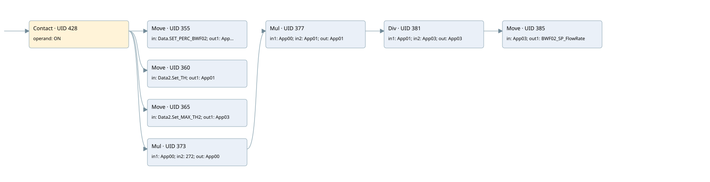

bwf02 speed calculation
analog output conversion · 검색 색인 순서 5 · 원본 내부 NID 추정 5
백업 PLF 원본의 3083376 바이트 위치에서 복원한 XML. 검색 문서 1683의 객체 키 16102200a966000000000000와 연결했다. 이름 해석 18/18개. 남은 RefId는 상수 또는 미해석 참조다.
연결 구조 다시 그리기
원본 Part/PCon/Wire를 이용한 연결도다. TIA 화면의 래더 배치 또는 실행 결과를 재현한 그림은 아니다. 핀 연결은 아래 표와 원본 XML을 기준으로 읽는다. 노드 위에 마우스를 두면 피연산자 이름을 볼 수 있다.

접점·코일·블록과 피연산자
| Part UID | Gate | Negated 핀 | 연결 피연산자 |
|---|---|---|---|
| 428 | Contact | operand = ON | |
| 355 | Move | in = Data.SET_PERC_BWF02; out1 = App00 | |
| 360 | Move | in = Data2.Set_TH; out1 = App01 | |
| 365 | Move | in = Data2.Set_MAX_TH2; out1 = App03 | |
| 373 | Mul | in1 = App00; in2 = 272; out = App00 | |
| 377 | Mul | in1 = App00; in2 = App01; out = App01 | |
| 381 | Div | in1 = App01; in2 = App03; out = App03 | |
| 385 | Move | in = App03; out1 = BWF02_SP_FlowRate |
접점 경로를 펼친 조건식
Contact·O/A·비교기의 원본 연결을 읽기 쉽게 펼친 보조 해석이다. POWER는 전원 레일 시작을 뜻한다. 호출 블록·에지·타이머의 내부 동작과 다중 쓰기 순서는 이 표로 실행 검증하지 않았다. 미해석 핀과 RefId는 원문 연결표에서 확인한다.
| UID | 동작 | 대상 | 원본 접점 경로 | 내용 |
|---|---|---|---|---|
| 355 | Move | App00 | ON | Move 입력 Data.SET_PERC_BWF02 |
| 360 | Move | App01 | ON | Move 입력 Data2.Set_TH |
| 365 | Move | App03 | ON | Move 입력 Data2.Set_MAX_TH2 |
| 385 | Move | BWF02_SP_FlowRate | Div UID 381.eno (블록 동작 확인) | Move 입력 App03 |
원본 배선 연결
| Wire UID | 동일 Wire 연결 끝점 |
|---|---|
| 430 | Powerrail {} ↔ Part 428.in |
| 406 | ORef 388 (ON) ↔ Part 428.operand |
| 429 | Part 428.out ↔ Part 355.en ↔ Part 360.en ↔ Part 365.en ↔ Part 373.en |
| 407 | ORef 389 (Data.SET_PERC_BWF02) ↔ Part 355.in |
| 408 | Part 355.out1 ↔ ORef 390 (App00) |
| 409 | ORef 391 (Data2.Set_TH) ↔ Part 360.in |
| 410 | Part 360.out1 ↔ ORef 392 (App01) |
| 411 | ORef 393 (Data2.Set_MAX_TH2) ↔ Part 365.in |
| 412 | Part 365.out1 ↔ ORef 394 (App03) |
| 413 | ORef 395 (App00) ↔ Part 373.in1 |
| 414 | ORef 396 (272) ↔ Part 373.in2 |
| 416 | Part 373.eno ↔ Part 377.en |
| 415 | Part 373.out ↔ ORef 397 (App00) |
| 417 | ORef 398 (App00) ↔ Part 377.in1 |
| 418 | ORef 399 (App01) ↔ Part 377.in2 |
| 420 | Part 377.eno ↔ Part 381.en |
| 419 | Part 377.out ↔ ORef 400 (App01) |
| 421 | ORef 401 (App01) ↔ Part 381.in1 |
| 422 | ORef 402 (App03) ↔ Part 381.in2 |
| 424 | Part 381.eno ↔ Part 385.en |
| 423 | Part 381.out ↔ ORef 403 (App03) |
| 425 | ORef 404 (App03) ↔ Part 385.in |
| 426 | Part 385.out1 ↔ ORef 405 (BWF02_SP_FlowRate) |
식별자 해석 근거 18개
| ORef UID | RefId | 이름 | IdentXmlPart 파일 | 해석 방법 |
|---|---|---|---|---|
| 388 | 1 | ON | 0664-IdentXmlPart.xml | UID/RID + search-text + NID agreement |
| 389 | 30 | Data.SET_PERC_BWF02 | 0662-IdentXmlPart.xml | UID/RID + search-text + NID agreement |
| 390 | 19 | App00 | 0663-IdentXmlPart.xml | UID/RID + search-text + NID agreement |
| 391 | 4 | Data2.Set_TH | 0662-IdentXmlPart.xml | UID/RID + search-text + NID agreement |
| 392 | 21 | App01 | 0663-IdentXmlPart.xml | UID/RID + search-text + NID agreement |
| 393 | 38 | Data2.Set_MAX_TH2 | 0662-IdentXmlPart.xml | UID/RID + search-text + NID agreement |
| 394 | 24 | App03 | 0663-IdentXmlPart.xml | UID/RID + search-text + NID agreement |
| 395 | 19 | App00 | 0663-IdentXmlPart.xml | UID/RID + search-text + NID agreement |
| 396 | 26 | 272 | 0661-IdentXmlPart.xml | literal candidate: UID/RID/NID + nearby named declarations + search-text agreement |
| 397 | 19 | App00 | 0663-IdentXmlPart.xml | UID/RID + search-text + NID agreement |
| 398 | 19 | App00 | 0663-IdentXmlPart.xml | UID/RID + search-text + NID agreement |
| 399 | 21 | App01 | 0663-IdentXmlPart.xml | UID/RID + search-text + NID agreement |
| 400 | 21 | App01 | 0663-IdentXmlPart.xml | UID/RID + search-text + NID agreement |
| 401 | 21 | App01 | 0663-IdentXmlPart.xml | UID/RID + search-text + NID agreement |
| 402 | 24 | App03 | 0663-IdentXmlPart.xml | UID/RID + search-text + NID agreement |
| 403 | 24 | App03 | 0663-IdentXmlPart.xml | UID/RID + search-text + NID agreement |
| 404 | 24 | App03 | 0663-IdentXmlPart.xml | UID/RID + search-text + NID agreement |
| 405 | 34 | BWF02_SP_FlowRate | 0664-IdentXmlPart.xml | UID/RID + search-text + NID agreement |
검색 코드 보조 자료
참조 명칭을 찾기 위한 자료이며 실행 순서나 AND/OR 관계는 위 연결표로 확인한다.
"on" move "data".set_perc_bwf02 move "data2".set_th #app01 move "data2".set_max_th2 #app03 mul #app00 272 mul #app00 #app01 div #app01 #app03 move #app03 #app00 #app01 #app03 "bwf02_sp_flowrate":p #app00